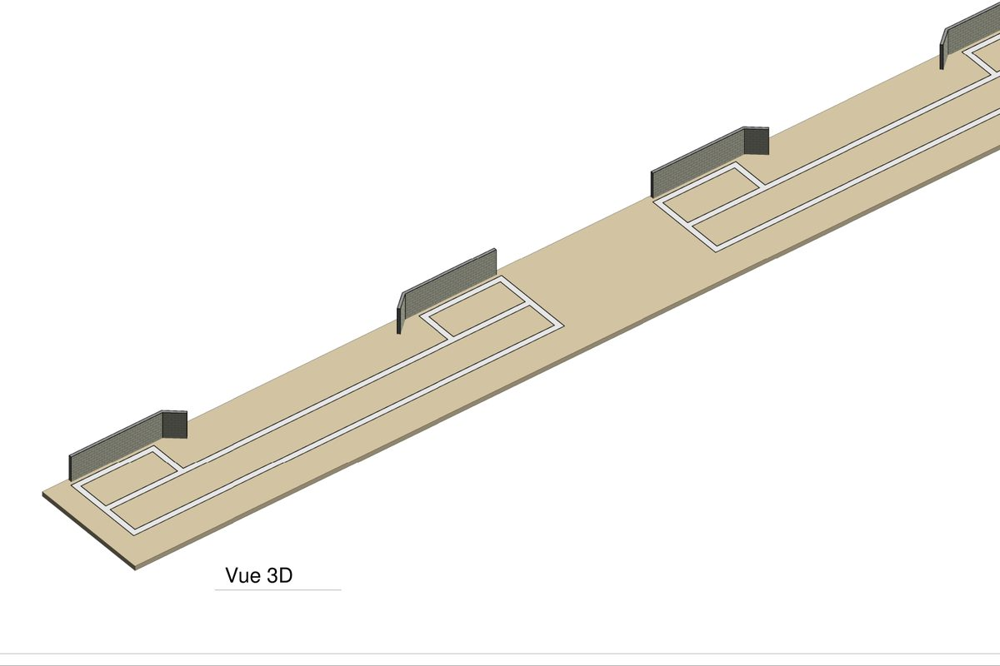
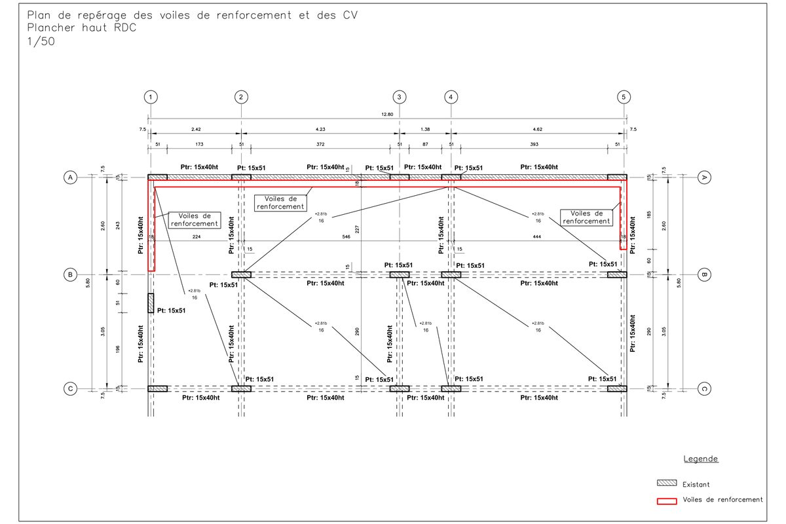
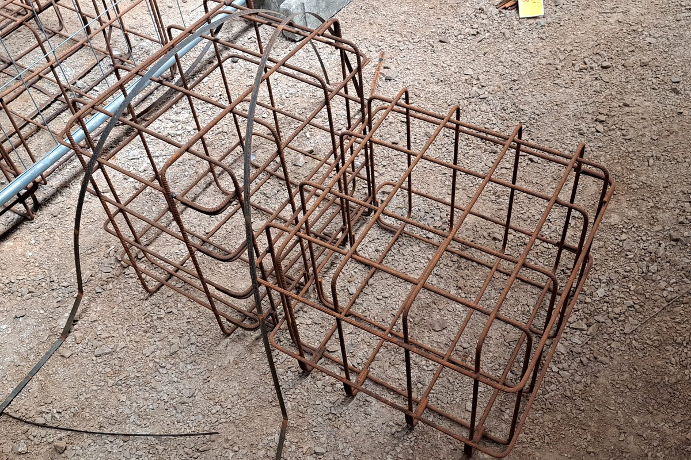
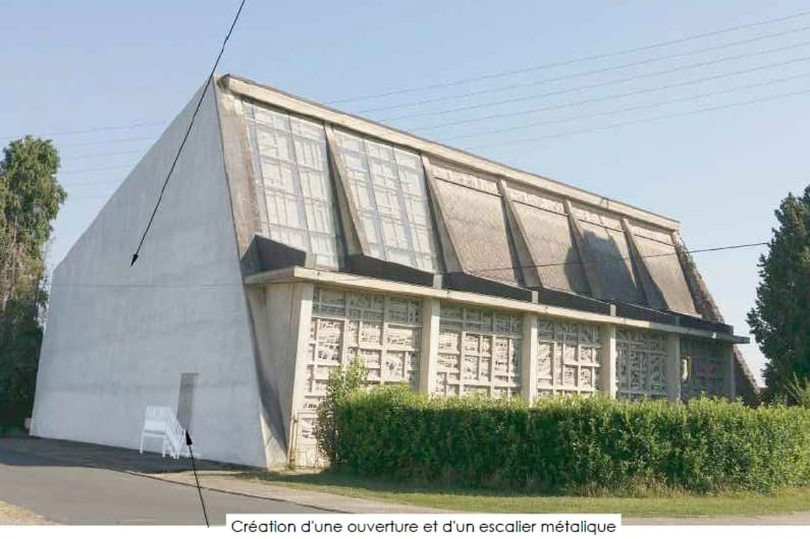
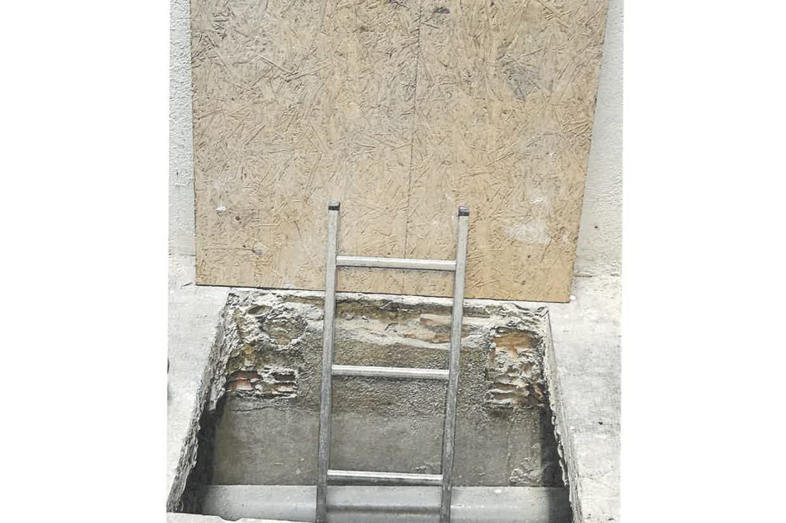
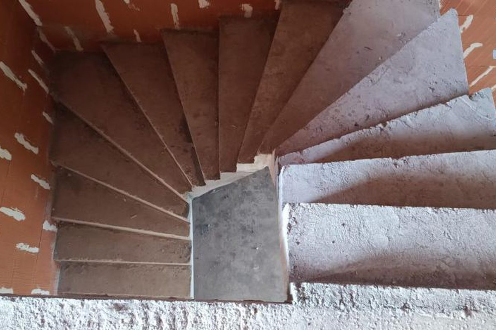
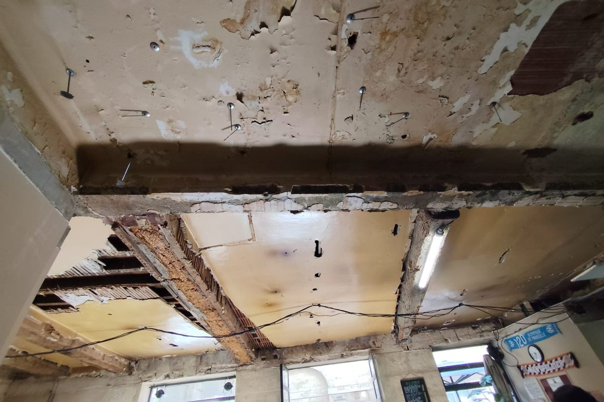

Portfolio
Nos réalisations
Projets de structure réalisés par MH Structure — plans de coffrage & armatures, diagnostics, attestations parasismiques en Guadeloupe et dans le Tarn.
10 projets publiés

Villa individuelle RDC
Villa RDC à Petit-Canal — plans de coffrage et d'armatures en zone sismique 5. Semelles, voiles béton armé, planchers.

Bâtiment industriel — Acier
Prédimensionnement complet d'une charpente métallique (portiques, contreventements) avec calcul du dallage sur sol élastique et des fondations (semelles isolées, longrines).

Fondations des loges — Stade de Sapiac
Deux bâtiments modulaires R+2 à usage de loges à Montauban : semelles filantes en béton armé en ceinture fermée sur gros béton, note de calcul et plans d'exécution.

Voiles de renforcement — maison individuelle
Contreventement d'une ossature poteaux-poutres par des voiles béton armé de 18 cm en zone sismique 5, à Sainte-Anne : plans EXE de coffrage, armatures, chaînages et scellements.

Analyse sismique modale — villa T4
Analyse modale spectrale tridimensionnelle d'une villa de plain-pied à voiles porteurs en zone sismique 5 : note de calcul Eurocode 8 et métré quantitatif béton.

Massifs de fondation — extensions scolaires
Modules préfabriqués d'extension de deux groupes scolaires à Albi : notes de calcul et plans d'exécution des massifs isolés en béton armé, ERP de catégorie III.

Ouverture dans un voile béton — église
Création d'une ouverture dans un voile en béton armé d'une église d'Agen pour la pose d'un escalier métallique : dimensionnement du renforcement et plan de ferraillage.

Reprise de charges d'un plancher — monte-charge
Vérification de la capacité portante d'un plancher existant à voûtains de brique, renforcé par un IPN 100, sous la trémie d'un monte-charge PMR de 300 kg dans une copropriété de Béziers.

Justification d'un escalier béton exécuté
Vérification a posteriori d'un escalier coulé en place à Prades, après réserves du contrôleur technique sur le bétonnage : toutes les vérifications satisfaites, y compris avec un béton dégradé.

Diagnostic de solidité — poutres bois d'un bar
Examen de solidité des poutres et solives bois d'un bar du centre historique de Montpellier, attaquées par des insectes xylophages, avant restructuration et mise aux normes ERP.